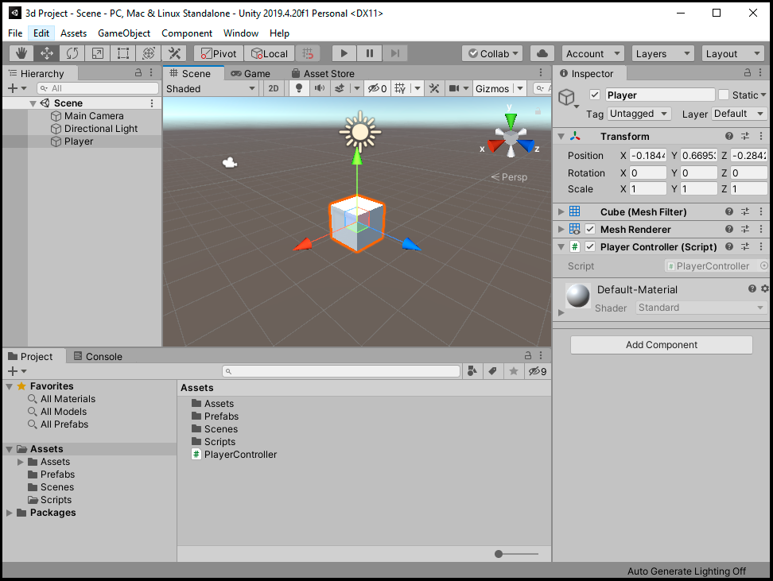

.PNG)
Agora que nos sabemos como usar e navegar pelo Editor Unity podemos nos aprofundar na parte de programação, e para fazer da maneira correta, vamos começar aprendendo como criar, modificar e adicionar Scripts a objetos, como utilizar alguma das implementações mais importantes da API, como "Game Object" e Quaternions, e por fim, como criar e utilizar "Scriptable Objects".
Antes de começarmos é altamente recomendável você ter o manual da API Unity aberto em mãos, ou que apenas de uma olhada em mãos, ele é bem escrito e informativo por si mesmo, cheio de exemplos de implementações.
Muito bem, com o editor aberto, aperte o botão direito do mouse dentro da janela do project e selecione "C# Script" na seção de "Create" [Create>C#Script] e o nomeie "PlayerController"(é importante lembrar que quando estamos criando um script, estamos basicamente criando uma nova classe e não podendo colocar um espaço entre as palavras), assim criando um novo componente que executara o código contido dentro quando um objeto estiver sendo simulado, nesse caso o objeto sendo o nosso player, e o código fazendo ele andar quando nos pressionarmos alguma tecla.
Quando criamos um Script na Unity, por padrão ele é designado como "MonoBehaviour", que é um tipo de classe que esta implementada no source
code, por padrão é possível instanciar as funções da API dentro dela e pode ser utilizada para "quase" qualquer coisa.
Apos criar o Script crie um cubo 3D que será o nosso player, o nomeie "Player" e arraste o script recém criado para o cubo na janela Scene, ou
selecione o cubo, e na janela do Inspector, aperte o botão Add Component e digite o nome do script que você quer adicionar, nesse casso
"PlayerController".
Agora estamos prontos para "colocar a mão na massa", para começar a programar, precisamos abrir o ambiente de desenvolvimento, aperte o botão direito na
janela do Project e selecione "Open C# Project".
Antes de prosseguirmos é bom notar que o ambiente de desenvolvimento que a maioria usa é o "Visual Studio", uma ferramenta da Microsoft
com parceria com a Unity, o intellisense(Auto completar) e outras mecânicas desse programa são muito bons, mas ele é surpreendentemente pesado e lento
comparado a outros programas que oferecem a mesma ou uma utilidade maior, por experiência eu recomendo uma ferramenta chamada
"Visual Studio Code", também feita pela Microsoft, uma ferramenta de desenvolvimento multi-linguagem mais leve e com mais utilidades e
opções de "add-ons" que o visual Studio padrão. Se você se interessar, de uma olhada
no site official para saber como o utilizar com a Unity.
Nesse tutorial eu estarei usando o Visual Studio Code.

Agora com o ambiente de programação aberto nos podemos notar duas coisas importantes, três linhas de códigos que estão importado "NameSpaces" e duas funções que foram
automaticamente criadas junto com o arquivo, esses NameSpaces no começo são obrigatórios para usar as funções da Unity e as funções "Start" e "Update" são muito
importante que você provavelmente vai usar na maioria dos Scripts
A Função "Start" executa todo o código dentro das chaves uma vez que o jogo começa e apenas quando ele começa, para executar um código quando um objeto é criado
depois da inicialização do jogo, nos pode usar a função "Awake", que é um tipo de variação da função Start que executa o código quando é criado. A função "Update"
executa todo o código dentro das chaves uma vez a cada frame, isso é executando um código milhares de vezes por segundo, isso pode pesar o jogo quando colocamos um
algoritmo mais complicado ou que usa a física do jogo, nessas instancias nos usamos a função "Fixed Update", que é uma variação do próprio Update, sendo executada
em um frequência fixa, de acordo com a maquina.
Nos vamos usar apenas a função Update para fazer o cubo se movimentar nos eixos x e z usando uma função da class Transform chamada "Translate". A forma
como o Transform movimenta um objeto no espaço é pegando o valor atual e somando ou substituindo por outro valor, oque o método Translate faz é deixar mais
fácil essa ação.
Para utilizar esse método, nos precisamos saber qual o Transform que vai ser utilizado, nesse caso, vai ser o Transform do objeto que esse script esta
ligado, para mencionar ele , nos usamos a variável local "transforme"(com T minúsculo), depois nos colocamos um ponto e a função "Translate()". Para a
função funcionar, nos precisamos dizer qual a direção em que ele vai se mover e para poder dizer qual a direção nos usamos a classe Unity gerencia três
valores(x, y, z), a classe Vector3 e acessando sua função que da uma direção: Vector3.foward, Vector3.right, Vector3.up, etc...
Além da direção nos precisamos saber qual a velocidade, nos podemos apenas multiplicar um valor a metodoVector3, mas lembre que isso será dentro do
função Update, como isso acontecera milhares de vezes por segundo, no precisamos normaliza-la de uma forma, e amaneira de fazer isso é multiplica-la pela
função “Time.deltaTime”, uma função que gera um numero de acordo com a velocidade da sua maquina.
Ate agora você dever ter algo assim: "transform.Translate(Vector3.forward * 5 * Time.deltaTime);"
Essa implementação do código esta correta, mas tem um erro crucial, ele vai mover o cubo em uma direção fixa para sempre, para corrigir esse erro, nos podemos introduzir uma variável que vai receber um valor toda vez que nos apertarmos uma tecla, e se nos não apertarmos uma tecla, esse valor vai ficar em zero, assim movendo o cubo ou o deixando parado quando quisermos. Para a nossa felicidade a Unity tem uma implementação que recebe o input do teclado e gera um valor de 1 a -1 quando as teclas "W" e "S" ou "A" e "D" são pressionadas, essa função sendo:
"Input.GetAxis("Horizontal");" que gera o valor 1 quando "A" é pressionado, -1 quando "D" é pressionado e 0 quando inativo.
"Input.GetAxis("Vertical");" que gera o valor 1 quando "W" é pressionado, -1 quando "S" é pressionado e 0 quando inativo.
Para receber esses valores, vamos criar 2 variáveis do tipo float chamadas inputH e inputV, formatando o código dessa maneira:
public float inputH, inputV;
void Update()
{
inputH = Input.GetAxis("Horizontal");
inputV = Input.GetAxis("Vertical");
transform.Translate(Vector3.forward * Time.deltaTime * 5 * inputV);
transform.Translate(Vector3.right * Time.deltaTime * 5 * inputH);
}
João Antonio Fernandes©
2021